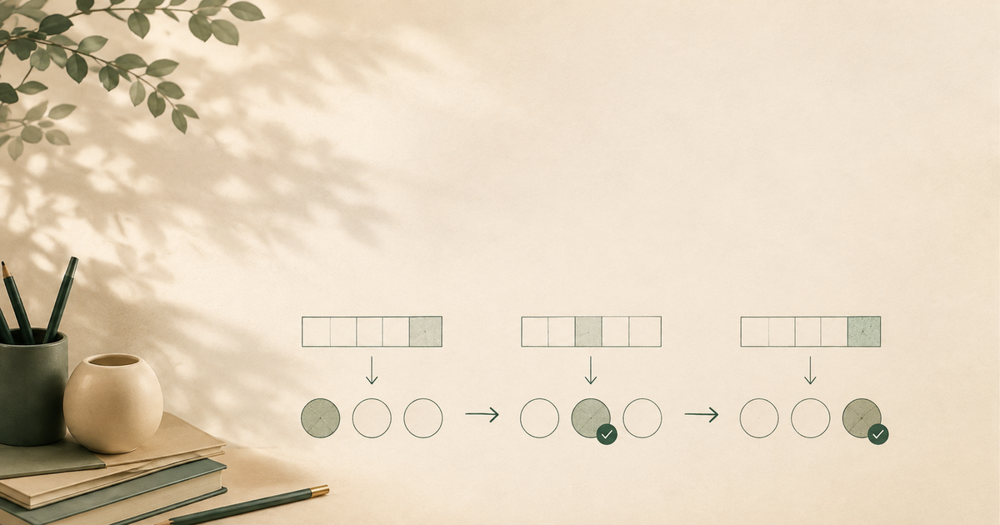

도입: 비와 비율에서 공식은 아는데 첫 줄이 비어 있을 때
비와 비율 단원은 아이가 계산 규칙을 알고 있는 것처럼 보이기 쉬운 단원입니다. 전체에 대한 부분, 기준량과 비교하는 양, 백분율처럼 이름은 익숙하고, 문제집에서도 식을 따라 쓰면 답이 나오는 경우가 많습니다. 그런데 문장제가 조금만 길어지면 첫 줄이 비어 있거나, 비율과 퍼센트를 섞어 쓰다가 풀이 시간이 길어지는 장면이 생깁니다.
부모님 입장에서는 “공식을 외웠는데 왜 못 풀까”라는 생각이 들 수 있습니다. 하지만 저는 비와 비율을 볼 때 정답률만 먼저 보지 않으려고 합니다. 아이가 기준이 되는 양을 찾았는지, 비교하는 양을 어떻게 말로 바꾸는지, 첫 줄 식을 왜 그렇게 쓰는지 자기 말로 설명할 수 있는지를 함께 봐야 합니다. 그래야 아이가 수학에서 멀어질 수 있는 지점을 조금 더 차분하게 확인할 수 있습니다.
“공식을 쓰기 전에, 아이가 무엇을 기준으로 보고 있는지 말할 수 있을까요?”
1. 첫 줄은 공식보다 기준량 찾기에서 시작됩니다
비율 문제에서 첫 줄이 늦어지는 이유는 공식 자체를 모르는 것만은 아닙니다. 많은 경우 아이는 나누어야 한다는 느낌은 알고 있지만, 무엇을 무엇으로 나누는지 분명히 말하지 못합니다. 예를 들어 “전체 40명 중 12명이 선택했다”는 문장을 볼 때, 12명만 눈에 들어오거나 40명과 12명을 어느 순서로 놓아야 하는지 헷갈릴 수 있습니다.
가정에서 확인할 때는 “공식이 뭐야?”보다 먼저 이렇게 물어볼 수 있습니다.
- 전체는 무엇으로 볼 수 있을까?
- 비교하려는 양은 무엇일까?
- 이 문제에서 1을 기준으로 보면 어떤 말이 될까?
- 답이 1보다 큰지 작은지 먼저 예상할 수 있을까?
이 질문은 아이를 시험하려는 질문이 아닙니다. 첫 줄을 쓰기 전에 기준을 찾도록 돕는 질문입니다. 기준량을 찾는 힘이 생기면 비율, 소수, 백분율로 표현이 바뀌어도 첫 줄 시작이 조금씩 안정됩니다.
2. 비율과 백분율은 숫자 변환보다 뜻 연결이 먼저입니다
비율을 소수로 나타내고, 다시 백분율로 바꾸는 계산은 반복하면 익숙해질 수 있습니다. 하지만 숫자 변환만 빠르게 연습하면 아이가 “0.3이 30%라는 것은 아는데, 문제 상황에서는 무엇을 뜻하는지”를 놓칠 수 있습니다. 이때는 계산을 더 많이 시키기보다 숫자가 말하는 장면을 짧게 설명하게 하는 과정이 필요합니다.
예를 들어 0.25라는 비율이 나오면 “전체를 1로 볼 때 0.25만큼”이라고 말해 볼 수 있습니다. 25%라면 “100개 중 25개 정도”라고 바꾸어 말할 수 있습니다. 긴 설명이 아니어도 괜찮습니다. 아이가 한 문장으로 자기 말로 설명할 수 있으면, 그다음 식의 방향이 훨씬 분명해집니다.
저는 수업에서 개념 확인을 할 때 “알겠지?”로 끝내기보다 “그 숫자가 문제 속에서 무슨 뜻인지 짧게 말해 볼래?”를 먼저 보려고 합니다. 설명 가능성 확인은 말 잘하는 아이를 고르려는 절차가 아니라, 풀이가 아이 안에서 연결되었는지 보는 기준입니다.

3. 풀이 시간이 길면 변환 위치를 나누어 봅니다
비와 비율 문제에서 시간이 오래 걸리면 “아이가 비율을 어려워한다”고 넓게 말하기 쉽습니다. 그러나 풀이 시간이 길어진 위치는 서로 다를 수 있습니다. 어떤 아이는 문장에서 기준량을 찾기 전에서 멈추고, 어떤 아이는 비율을 구한 뒤 백분율로 바꾸는 과정에서 흔들립니다. 또 어떤 아이는 계산은 맞지만 답이 문제 상황에 맞는 크기인지 확인하지 않아 오답으로 이어집니다.
그래서 집에서 볼 때도 기록은 작게 나누는 편이 좋습니다.
- 기준량 표시 전에서 멈춤
- 비교하는 양은 찾았지만 식 순서 확인 필요
- 소수와 백분율 변환에서 시간 지연
- 답을 낸 뒤 크기 예상과 단위 확인 누락
- 해설 뒤에는 이해하지만 다음 날 재풀이에서 다시 멈춤
이 기록은 아이를 느리다고 평가하기 위한 것이 아닙니다. 다음 반복을 어디에서 시작할지 정하기 위한 관찰입니다. 정답률만 보면 보이지 않는 부분이 이런 작은 기록에서 드러납니다.
4. 빈칸은 단원 전체가 무너졌다는 뜻이 아닐 수 있습니다
문제집에 빈칸이 남아 있으면 부모님은 걱정이 커질 수 있습니다. 특히 비와 비율은 분수, 소수, 백분율이 함께 나오기 때문에 아이가 여러 개념을 한꺼번에 놓친 것처럼 보일 때가 있습니다. 하지만 빈칸 하나가 단원 전체의 부족을 뜻하지는 않습니다. 첫 줄의 기준이 잡히지 않았거나, 문제의 말뜻을 숫자 관계로 옮기는 과정에서 잠시 멈춘 것일 수 있습니다.
이럴 때는 빈칸을 바로 채우게 하기보다 “여기서 무엇까지는 알겠어?”라고 물어보는 편이 좋습니다. 아이가 전체와 부분을 구분할 수 있는지, 그림이나 막대 모델로 표시할 수 있는지, 100을 기준으로 바꾸면 어떻게 말할 수 있는지 확인해 봅니다. 말로 설명이 짧게라도 가능해지면 빈칸은 다시 시작할 위치가 됩니다.
제가 먼저 보는 부분도 바로 그 지점입니다. 아이가 못 쓴 줄을 혼내기보다, 어떤 단서까지는 잡고 있었는지 확인합니다. 그래야 반복이 부담이 아니라 회복의 과정이 됩니다.
5. 재풀이 성공은 같은 공식을 다시 쓰는 것보다 넓게 봅니다
오답을 고친 뒤 바로 끝내면 아이는 해설을 따라 쓴 기억만 남길 수 있습니다. 비와 비율에서는 며칠 뒤 비슷한 문제를 다시 보았을 때 기준량을 먼저 표시하는지, 비율의 뜻을 말로 설명하는지, 답의 크기를 예상하는지까지 확인해야 반복이 남습니다.
재풀이를 할 때는 문제 수를 많이 늘리지 않아도 됩니다. 한두 문제라도 “전체는 무엇인지”, “비교하는 양은 무엇인지”, “이 비율을 백분율로 바꾸면 어떤 뜻인지”를 다시 말하게 해 보면 충분합니다. 아이가 자기 말로 설명하고 첫 줄을 스스로 시작할 수 있다면, 그 반복은 의미 있게 쌓이고 있는 것입니다.
시퀀스 수학에서 중요하게 보는 것도 이 흐름입니다. 많이 푸는 것보다 먼저, 어떤 장면에서 멈추고 어떻게 다시 이어지는지를 봅니다. 재능이 아니라 반복이 만든 실력이라는 말은 같은 문제를 기계적으로 반복한다는 뜻이 아닙니다. 기준을 찾고, 말로 정리하고, 다시 풀어 보는 과정이 쌓일 때 실력이 안정된다는 뜻에 가깝습니다.
정리: 비와 비율은 ‘무엇을 기준으로 보았는가’가 먼저입니다
비와 비율에서 아이가 막힐 때 바로 공식 암기 부족으로만 보면 다음 도움이 좁아질 수 있습니다. 먼저 기준량을 찾았는지, 비교하는 양을 말할 수 있는지, 비율과 백분율의 뜻을 자기 말로 설명할 수 있는지 확인해 보세요. 첫 줄 시작, 풀이 시간, 빈칸, 오답 원인, 재풀이 성공을 나누어 보면 아이가 다시 시작할 위치가 보입니다.
가정에서 오늘 한 문제만 본다면 정답보다 이 질문을 먼저 해볼 수 있습니다.
“이 문제에서 전체는 무엇이고, 비교하는 양은 무엇일까?”
작은 질문이 첫 줄을 만들고, 첫 줄이 반복을 다시 이어 줍니다.
함께 읽으면 좋은 글 / 다음 글에서 이어볼 주제
- 수학 질문법, 정답을 알려주기 전에 먼저 물을 것
- 수학 문제집 반복, 한 권 더 풀기 전에 먼저 볼 기준
- 다음 글: 백분율 문장제에서 단위를 확인하는 방법